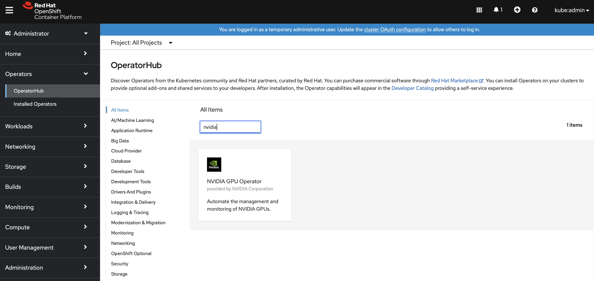
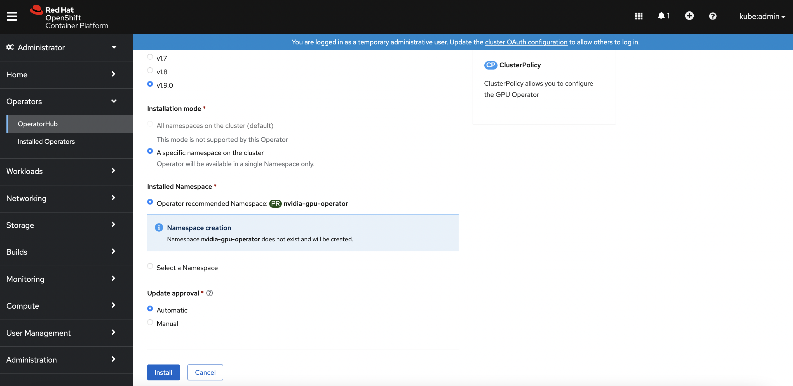
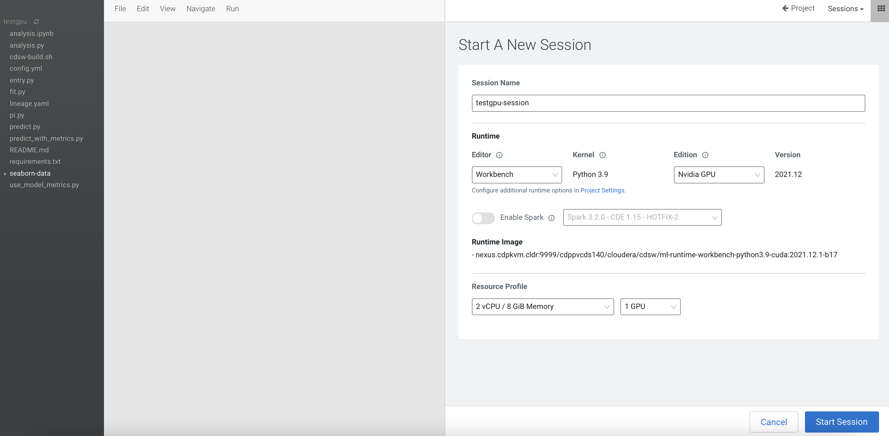
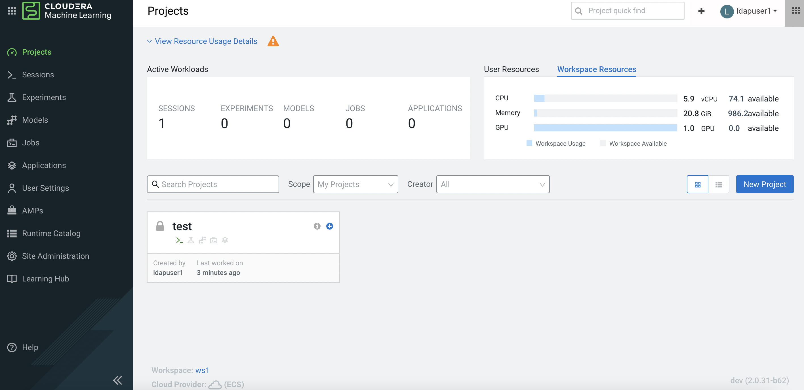

Add Nvidia GPU
This article describes the steps to install the Nvidia GPU software driver and its associated software in the CDP PvC Data Services platform with Openshift solution. These implementation steps are to be carried out after the Openshift platform installation. This article also describes the steps to test the Nvidia GPU card in the CML workspace.
- Assumption
- Install NFD Operator
- Install Nvidia GPU Operator
- Nvidia GPU Card Testing and Verification in CML
- Taint the Openshift Worker Node with Nvidia GPU Card
Assumption
- The software version of each CDP Private Cloud Data Services component in this demo is described below.
| Software | Version |
|---|---|
| CDP PvC Base | 7.1.7 SP1 |
| Cloudera Manager | 7.6.5 |
| CDP PvC Data Services | 1.4.0 |
| Red Hat Openshift Container Platform (OCP) | 4.8 |
| Red Hat Openshift Container Storage (OCS) | 4.8 |
Install NFD Operator
-
In Openshift dashboard, navigate to
Operators>OperatorHub. Search forNode Feature Discovery. Install the NFD operator and its API.

-
SSH into the Openshift bastion node and run the following command to ensure that
ocpgpu.cdpkvm.cldrhost (with GPU card installed) haspci-10de.present=truefield in the node specification. This indicates the presence of Nvidia GPU card in this particular worker node.[root@ocpbastion ~]# oc describe node ocpgpu.ocp4.cdpkvm.cldr | grep pci-10de.present feature.node.kubernetes.io/pci-10de.present=true
Install Nvidia GPU Operator
-
Navigate to
Operators>OperatorHub. Search forNvidia GPU Operator. Install the operator and itsClusterPolicies.


-
SSH into the Openshift bastion node and run the following command to verify the successful installation of the operator and the clusterPolicy.
[root@ocpbastion ~]# oc get pods,daemonset -n nvidia-gpu-operator NAME READY STATUS RESTARTS AGE pod/gpu-feature-discovery-l7pqc 1/1 Running 0 6m46s pod/gpu-operator-765ff6c665-mznvk 1/1 Running 0 7m50s pod/nvidia-container-toolkit-daemonset-6brmr 1/1 Running 0 6m47s pod/nvidia-cuda-validator-8brpz 0/1 Completed 0 2m50s pod/nvidia-dcgm-5txs7 1/1 Running 0 6m47s pod/nvidia-dcgm-exporter-wj4dg 1/1 Running 0 6m46s pod/nvidia-device-plugin-daemonset-b2k5x 1/1 Running 0 6m47s pod/nvidia-device-plugin-validator-29b9g 0/1 Completed 0 2m32s pod/nvidia-driver-daemonset-48.84.202208152344-0-cxsld 2/2 Running 0 6m47s pod/nvidia-mig-manager-kqzk5 1/1 Running 0 87s pod/nvidia-node-status-exporter-2xsdc 1/1 Running 0 6m47s pod/nvidia-operator-validator-f2zdm 1/1 Running 0 6m47s NAME DESIRED CURRENT READY UP-TO-DATE AVAILABLE NODE SELECTOR AGE daemonset.apps/gpu-feature-discovery 1 1 1 1 1 nvidia.com/gpu.deploy.gpu-feature-discovery=true 6m46s daemonset.apps/nvidia-container-toolkit-daemonset 1 1 1 1 1 nvidia.com/gpu.deploy.container-toolkit=true 6m47s daemonset.apps/nvidia-dcgm 1 1 1 1 1 nvidia.com/gpu.deploy.dcgm=true 6m47s daemonset.apps/nvidia-dcgm-exporter 1 1 1 1 1 nvidia.com/gpu.deploy.dcgm-exporter=true 6m46s daemonset.apps/nvidia-device-plugin-daemonset 1 1 1 1 1 nvidia.com/gpu.deploy.device-plugin=true 6m47s daemonset.apps/nvidia-driver-daemonset-48.84.202208152344-0 1 1 1 1 1 feature.node.kubernetes.io/system-os_release.OSTREE_VERSION=48.84.202208152344-0,nvidia.com/gpu.deploy.driver=true 6m47s daemonset.apps/nvidia-mig-manager 1 1 1 1 1 nvidia.com/gpu.deploy.mig-manager=true 6m46s daemonset.apps/nvidia-node-status-exporter 1 1 1 1 1 nvidia.com/gpu.deploy.node-status-exporter=true 6m47s daemonset.apps/nvidia-operator-validator 1 1 1 1 1 nvidia.com/gpu.deploy.operator-validator=true 6m47s -
Verify that the Nvidia GPU card can be consumed by a newly provisioned CUDA pod.
[root@ocpbastion ~]# oc new-project nvidia-test [root@ocpbastion ~]# cat << EOF | oc create -f - > > apiVersion: v1 > kind: Pod > metadata: > name: cuda-vectoradd > spec: > restartPolicy: OnFailure > containers: > - name: cuda-vectoradd > image: "nvidia/samples:vectoradd-cuda11.2.1" > resources: > limits: > nvidia.com/gpu: 1 > EOF pod/cuda-vectoradd created [root@ocpbastion ~]# oc get pods NAME READY STATUS RESTARTS AGE cuda-vectoradd 0/1 Completed 0 13s [root@ocpbastion ~]# oc logs cuda-vectoradd [Vector addition of 50000 elements] Copy input data from the host memory to the CUDA device CUDA kernel launch with 196 blocks of 256 threads Copy output data from the CUDA device to the host memory Test PASSED Done [root@ocpbastion ~]# oc describe pod cuda-vectoradd | grep -i Node: Node: ocpgpu.ocp4.cdpkvm.cldr/10.15.4.185[root@ocpbastion ~]# oc exec -it nvidia-driver-daemonset-48.84.202208152344-0-cxsld -- nvidia-smi Defaulted container "nvidia-driver-ctr" out of: nvidia-driver-ctr, openshift-driver-toolkit-ctr, k8s-driver-manager (init) Fri Aug 26 06:07:36 2022 +-----------------------------------------------------------------------------+ | NVIDIA-SMI 470.82.01 Driver Version: 470.82.01 CUDA Version: 11.4 | |-------------------------------+----------------------+----------------------+ | GPU Name Persistence-M| Bus-Id Disp.A | Volatile Uncorr. ECC | | Fan Temp Perf Pwr:Usage/Cap| Memory-Usage | GPU-Util Compute M. | | | | MIG M. | |===============================+======================+======================| | 0 NVIDIA A100-PCI... On | 00000000:07:00.0 Off | 0 | | N/A 28C P0 33W / 250W | 0MiB / 40536MiB | 0% Default | | | | Disabled | +-------------------------------+----------------------+----------------------+ +-----------------------------------------------------------------------------+ | Processes: | | GPU GI CI PID Type Process name GPU Memory | | ID ID Usage | |=============================================================================| | No running processes found | +-----------------------------------------------------------------------------+ [root@ocpbastion ~]# oc describe pod nvidia-driver-daemonset-48.84.202208152344-0-cxsld | grep Node: Node: ocpgpu.ocp4.cdpkvm.cldr/10.15.4.185
Nvidia GPU Card Testing and Verification in CML
-
Assuming a CML workspace is already provisioned in the CDP PvC Data Services platform, navigate to
Site Administration>Runtime/Engine. Select the number forMaximum GPUs per Session/GPU. This procedure effectively allows the CML session to consume the GPU card.
-
Create a CML project and start a new session by selecting the
Workbencheditor with Python kernel alongsideNvidia GPUedition. Choose the number of GPU to use - in this demo, the quantity is 1.
-
Create a new Python file and run the following script. Also, open the terminal session and run
nvidia-smitool. The output shows the Nvidia GPU card details.!pip3 install torch import torch torch.cuda.is_available() torch.cuda.device_count() torch.cuda.get_device_name(0)
-
Navigate to the CML project main page and a check at the user resources dashboard displays the GPU card availability.


-
SSH into the Openshift bastion node and run the following command to verify the node that hosting the above CML project session pod is
ocpgpu.cdpkvm.cldr.[root@ocpbastion ~]# oc -n workspace-user-1 describe pod buldb59dst035j13 | grep Node: Node: ocpgpu.ocp4.cdpkvm.cldr/10.15.4.185 -
When a process is consuming the Nvidia GPU, the output of
nvidia-smitool will show the PID of that process (in this case, the CML session pod).[root@ocpbastion ~]# oc -n nvidia-gpu-operator exec -it nvidia-driver-daemonset-48.84.202208152344-0-r8rpv -- nvidia-smi Defaulted container "nvidia-driver-ctr" out of: nvidia-driver-ctr, openshift-driver-toolkit-ctr, k8s-driver-manager (init) Fri Aug 26 07:42:07 2022 +-----------------------------------------------------------------------------+ | NVIDIA-SMI 470.82.01 Driver Version: 470.82.01 CUDA Version: 11.4 | |-------------------------------+----------------------+----------------------+ | GPU Name Persistence-M| Bus-Id Disp.A | Volatile Uncorr. ECC | | Fan Temp Perf Pwr:Usage/Cap| Memory-Usage | GPU-Util Compute M. | | | | MIG M. | |===============================+======================+======================| | 0 NVIDIA A100-PCI... On | 00000000:07:00.0 Off | 0 | | N/A 30C P0 44W / 250W | 39326MiB / 40536MiB | 12% Default | | | | Disabled | +-------------------------------+----------------------+----------------------+ +-----------------------------------------------------------------------------+ | Processes: | | GPU GI CI PID Type Process name GPU Memory | | ID ID Usage | |=============================================================================| | 0 N/A N/A 189226 C /usr/local/bin/python3.9 39323MiB | +-----------------------------------------------------------------------------+
Taint the Openshift Worker Node with Nvidia GPU Card
-
Reserve the worker node (with Nvidia GPU Card installed) for any CML session that requires GPU card by running the following command. This will disallow all other non-GPU related workloads to be scheduled in this particular node.
[root@ocpbastion ~]# oc adm taint node ocpgpu.ocp4.cdpkvm.cldr nvidia.com/gpu=true:NoSchedule node/ocpgpu.ocp4.cdpkvm.cldr tainted